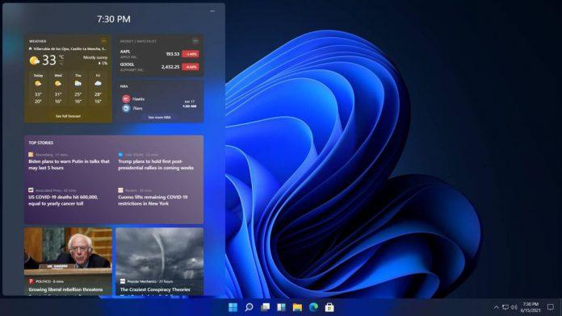

Windows 11 LEAKED

Microsoft’s next operating system will be called Windows 11. This Tuesday its appearance has been leaked entirely on Baidu, a Chinese search engine. What’s more, have circulated through social networks various screenshots of its main novelties such as the menu Start or the control panel, among others.
The new Windows 11 user interface is the best representation of the phrase “surprised, but not shocked.” And, as the leak reveals, the system looks a lot like what was originally in Windows 10X, a project that Microsoft canceled in favor of Windows 11.